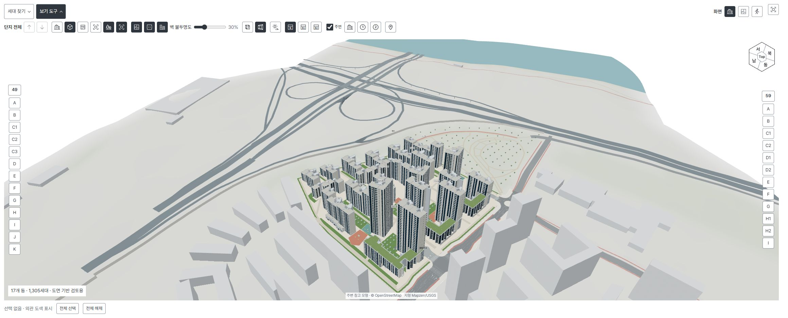
17 buildings in context
The site view instances all 1,305 homes and includes nearby roads, buildings, park areas, the river, two basement levels, and ramps.
17 buildings · 1,305 homes · 25 unit types · self-hosted
I turned public notices and floor plans into a service where residents can walk through the full complex and place furniture in their own unit. I handled source research, the 3D model pipeline, browser features, the server, and NAS operations.
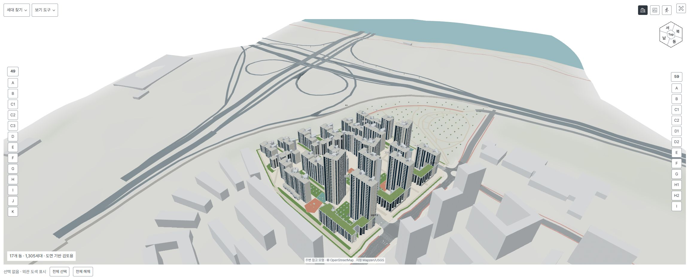
This is a resident-community reference service, not an official SH site, official showroom, or as-built BIM. The 1,305-home scale is not a user count.
I organized prices, expansion costs, areas, schedules, notices, and 269 FAQ entries with original-source links and confidence labels. The same unit catalog feeds floor plans, 3D views, showrooms, and the planner.
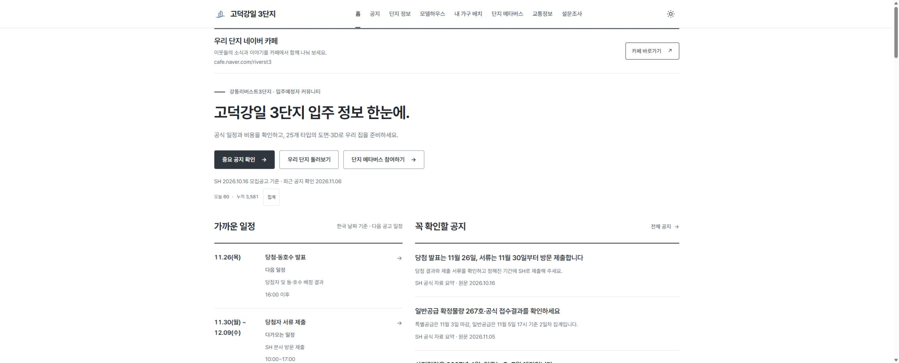

The site view instances all 1,305 homes and includes nearby roads, buildings, park areas, the river, two basement levels, and ramps.
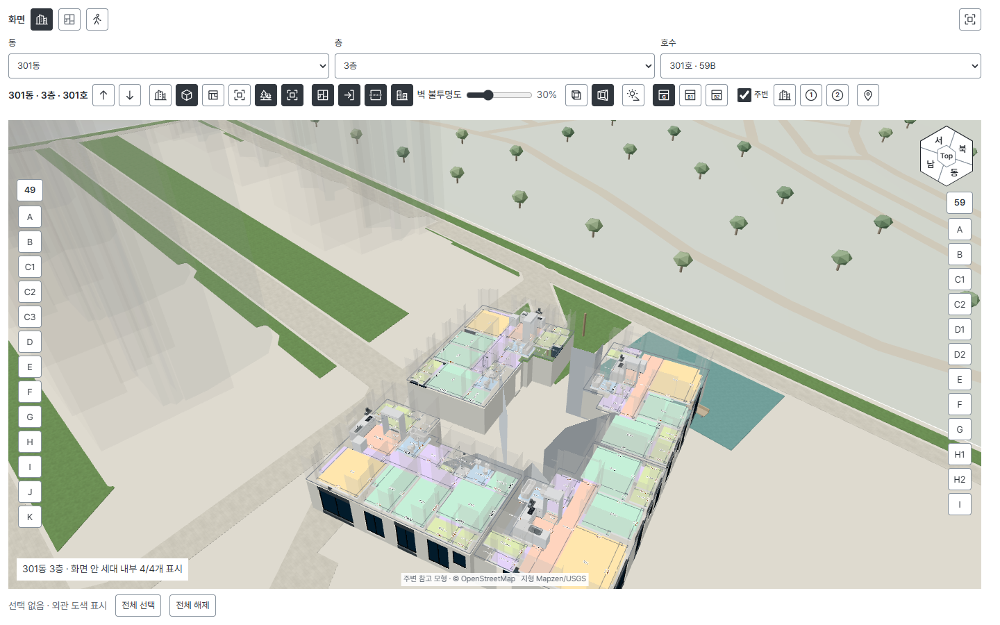
A selected unit loads at its actual site position. Camera and selection state stay consistent while moving between exterior, floor cutaway, and unit detail.
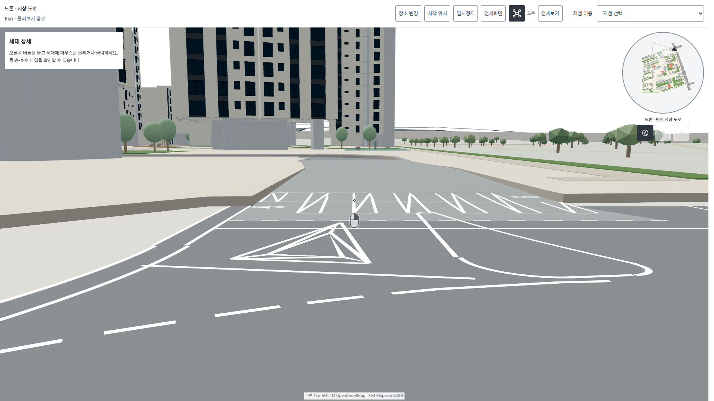
Keyboard and touch input, collisions, ramp elevation, and a minimap support walking and drone movement on desktop and mobile.
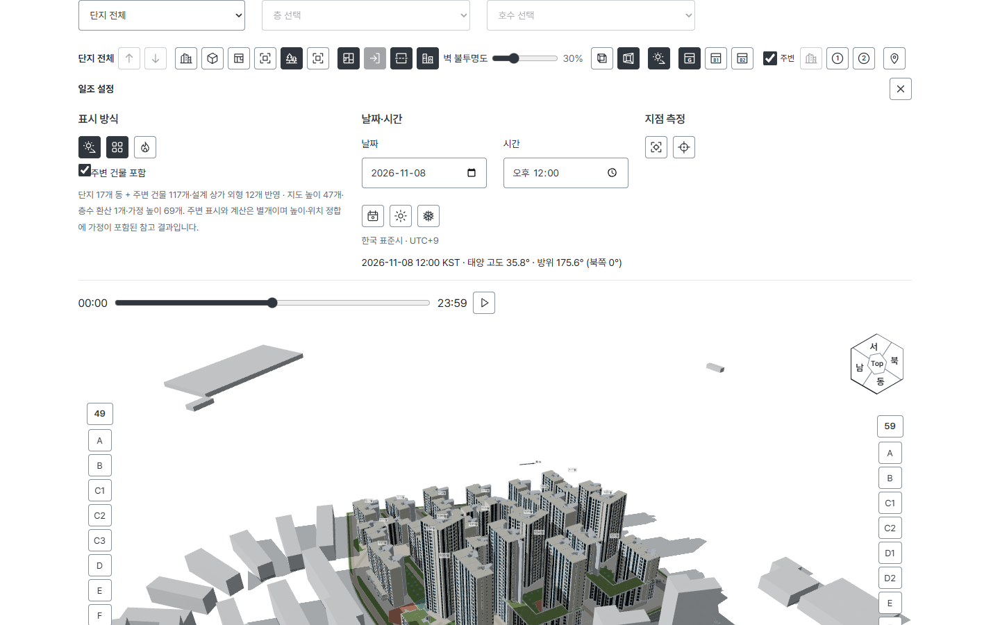
Users can inspect time-based shadows, direct-sun intervals, and a Worker-computed surface heatmap. It is not a legal sunlight, indoor daylight, or weather assessment.
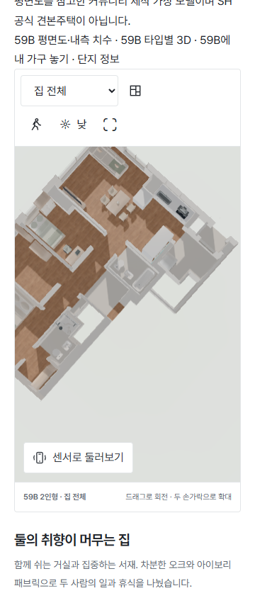
Rotation, zoom, room presets, and first-person controls were adapted for touch input.
AI-assisted and manual analysis produces structured JSON. Pydantic and geometry checks validate it, a floor-by-floor Tkinter view supports review, and Python emits GLB files and reports. The generator itself does not claim to read drawings or convert DWG automatically.
Rooms, walls, openings, fixtures, stairs, and inner dimensions.
Missing data, intersections, and floor geometry are checked against the original plans.
Composite floors, wall openings, and embedded Korean labels are packaged as GLB.
The plan viewer, site instances, showroom, and planner share the same models.
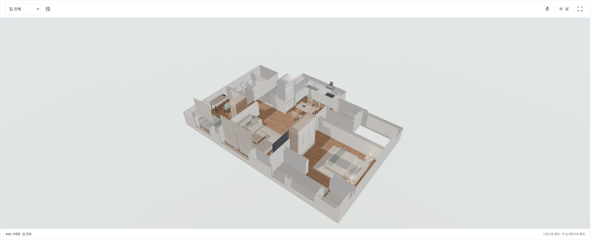
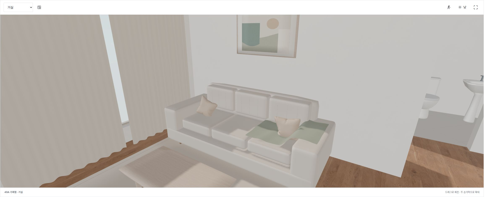
Every unit type has family and two-person examples, with whole-home views, room presets, first-person movement, and evening lighting.
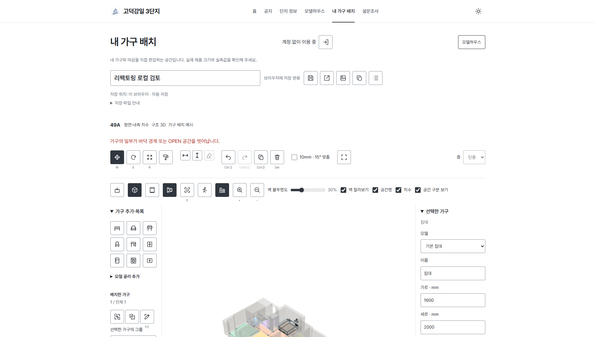
Guest work auto-saves in the browser; signed-in users keep private documents across devices. The editor supports transform and dimensions, grouping, duplication, locks, undo/redo, finishes, collision warnings, and JSON/PNG export.
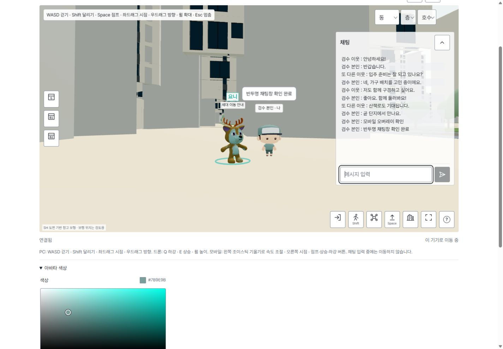
Nickname entry, avatar position, and chat synchronize over WebSocket. Bambi answers from tagged FAQ data; Yoni helps users move to a building, floor, and unit. They are not generative AI or LLM chatbots.
Names and messages in this screenshot are synthetic QA data, not resident conversation.
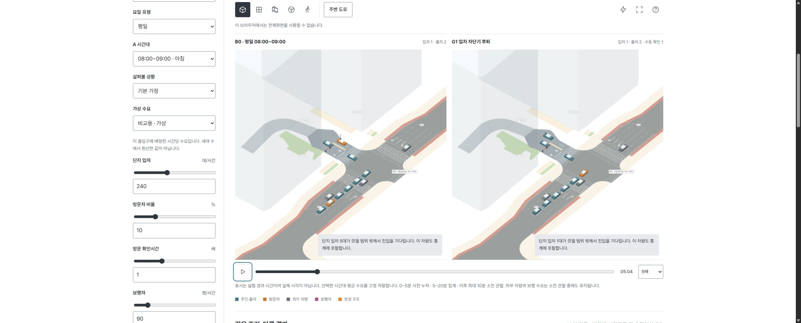
Vehicle and pedestrian paths follow the planned road and sidewalk geometry. A Web Worker computes gate service, merges, conflicts, and residual queues for B0, O1 pre-registration, G1 gate setback, G2 entry separation, and G3 pedestrian-access scenarios using common demand over 10 or 30 runs.
This is an explanatory assumption experiment based on design documents. It does not predict congestion, signals, accident probability, or a safety grade.
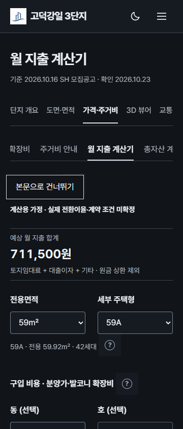
Users can adjust sale and expansion cost, converted deposit, land rent, loan interest, and other monthly spending. It is not a final eligibility or lending decision.
MapLibre/OpenFreeMap presents road conditions, CCTV lists and official viewers, favorites, and shareable camera positions. Provider-specific adapters, shared cache, and monthly quota ledgers retain source timestamps and provenance.
These read-only counts were captured at 20:10 KST on November 9, 2026. Their periods and units differ, so I did not turn them into conversion or resident-penetration rates.
Oct 26-Nov 9 browser-days, not page views, unique visitors, or people.
Nov 3-9 browser-days.
Events since Nov 4, 09:10 KST.
Includes existing documents; not a new-layout count.
Revision events including local and autosave, not 8,715 designs.
Export events since instrumentation began.
Current documents across 24 non-operator accounts; excludes local-only and deleted work.
Per-tag daily browser-deduplicated selections, not FAQ views.
No standalone usage event exists, so I do not report zero or infer frequency.
The video moves from official information into the complex, showrooms, and resident tools using the actual interface.
I selected eight anonymized messages with clear feature context from conversations saved through November 6, 2026. The speakers are confirmed only as conversation participants; resident or applicant status and permission for public quotation were not verified. These messages are not a satisfaction score or unique-user count. Quotes below are translated from Korean.
3D tour · Oct 28“The 3D tour you made is much better than the cyber showroom.”
FAQ · Oct 28“The site FAQ is so good. It is organized better than the official site.”
showroom · Oct 30“I am seeing the model home for the first time, and this is amazing.”
planner · Oct 30“I just finished arranging the bedroom furniture. Trying it this way made me excited.”
3D recommendation · Nov 4“Go to the site, open Complex Info → 3D Viewer, and use it to get a rough idea.”
drone mode · Nov 5“I used drone mode successfully.”
information sharing · Nov 5“You made such a good site that I am already getting attached to the place.”
3D movement · Nov 5“You can jump and see the view from the window. There are so many features.”
I also handled session and CSRF boundaries, private user data, asynchronous and GPU resource lifetime, reproducible builds, selective deployment, database backup, and actual restore checks.
Shared rendering and catalog modules serve several public tools.
Public data, private documents, permissions, and operational records stay separated.
Plaza synchronization and heavy calculations run outside the main rendering path.
Sealed builds, hash verification, serialized deployment, backup, and restore procedures support the live service.